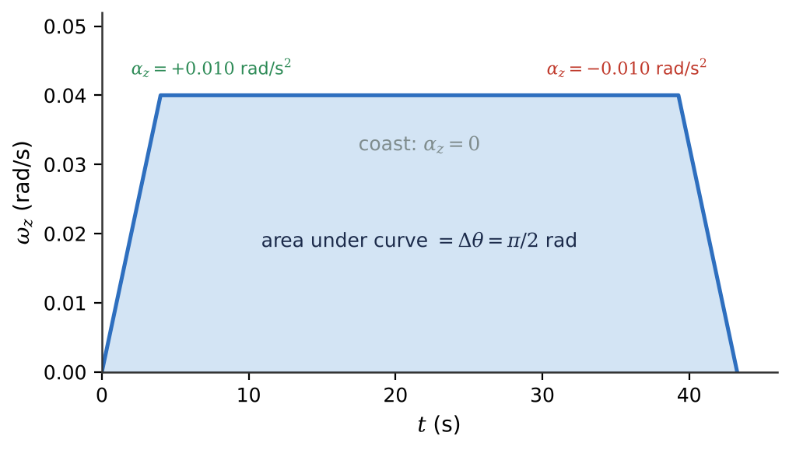
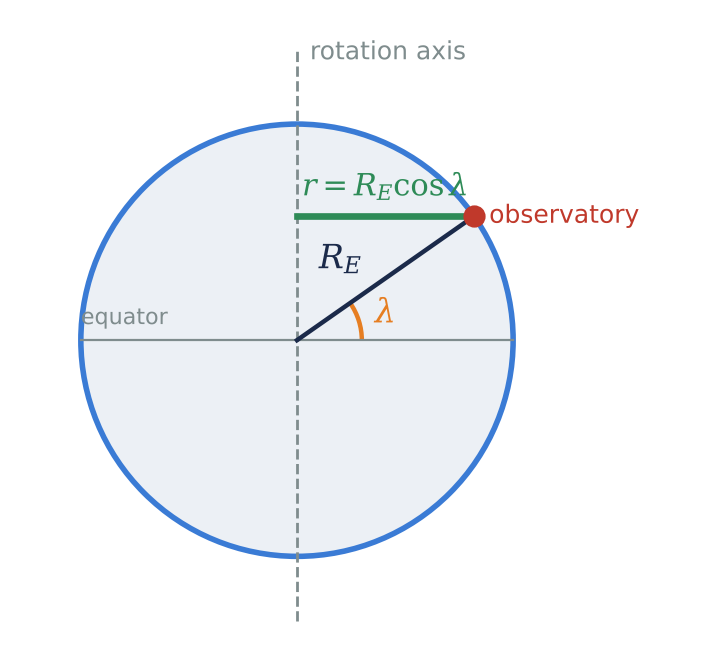
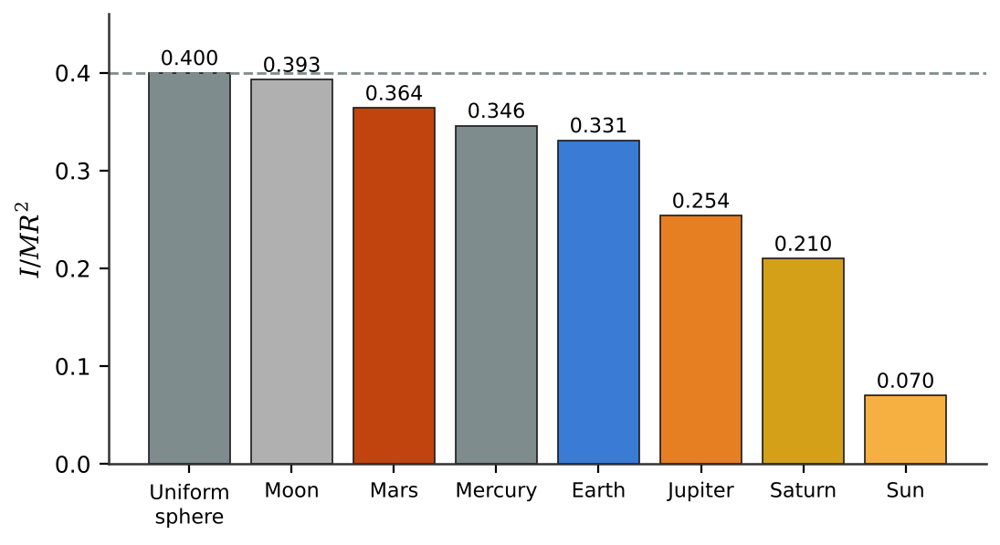

🌀What you will learn
By the end of this module, you can:
- Describe rotation with angular position, angular velocity and angular acceleration, always working in radians.
- Solve constant-angular-acceleration problems such as telescope slews and reaction-wheel spin-downs.
- Relate the speed and the tangential and radial accelerations of a point to its distance from the rotation axis, including points on a spinning planet.
- Compute moments of inertia (by sums, the parallel-axis theorem, or integration) and rotational kinetic energies.
- Interpret the moment-of-inertia factor \(I/MR^2\) as a probe of a planet's interior.
9.1Angular Velocity and Acceleration
We model stars, planets, telescopes and spacecraft as rigid bodies: objects whose size and shape do not change as they turn. Every point of a rigid body turns through the same angle in the same time, so one number, the angular coordinate \(\theta\), describes the rotation. In physics we measure \(\theta\) in radians: \(\theta = s/r\), the arc length divided by the radius. One revolution is \(2\pi\) rad = 360°, and 1 rad ≈ 57.3°. The equations of this chapter work only with radians.
The angular velocity is \(\omega_z = d\theta/dt\) (rad/s), positive for counterclockwise rotation seen from \(+z\). Earth turns once per sidereal day (86164.1 s), so \(\omega = 2\pi/T = 7.292\times10^{-5}\) rad/s. As a vector, \(\vec{\omega}\) lies along the rotation axis, given by the right-hand rule: Earth's \(\vec{\omega}\) points out of the North Pole, toward Polaris.
The angular acceleration is \(\alpha_z = d\omega_z/dt = d^2\theta/dt^2\) (rad/s2). If \(\alpha_z\) and \(\omega_z\) have the same sign the rotation speeds up; opposite signs mean it slows down. The Crab pulsar spins with period 0.0337 s, and that period grows by \(4.21\times10^{-13}\) s every second: a small negative angular acceleration as the star radiates away its spin energy. Earth's day, too, lengthens by about 2.3 ms per century because of tidal friction.
9.2Rotation with Constant Angular Acceleration
A large telescope slews to a new target by speeding up at a fixed rate, coasting, then slowing at a fixed rate; spacecraft reaction wheels change speed in a similar controlled way. In each phase \(\alpha_z\) is constant, and the equations are exactly those of Chapter 2 with \(x \to \theta\), \(v_x \to \omega_z\), \(a_x \to \alpha_z\):
\[\omega_z = \omega_{0z} + \alpha_z t,\qquad \theta = \theta_0 + \omega_{0z}t + \tfrac12\alpha_z t^2,\]\[\omega_z^2 = \omega_{0z}^2 + 2\alpha_z(\theta - \theta_0),\qquad \theta - \theta_0 = \tfrac12(\omega_{0z} + \omega_z)t.\]These hold only when \(\alpha_z\) is constant. For a multi-phase motion, treat each phase separately; the final values of one phase are the initial values of the next. On a graph of \(\omega_z\) versus \(t\), the area under the curve is the angular displacement, just as area under \(v_x(t)\) is displacement.
Why not use a huge angular acceleration and slew instantly? A large \(\alpha\) means large forces on the mirror supports far from the axis, and a reaction wheel's \(\alpha\) is limited by the torque of its motor. Before calculating, always convert rpm to rad/s (1 rpm = \(2\pi/60\) rad/s) and degrees to radians.

9.3Relating Linear and Angular Kinematics
All points of a rigid body share \(\theta\), \(\omega\) and \(\alpha\), but their linear speeds differ. A point at perpendicular distance \(r\) from the axis moves along a circle with speed
\[v = r\omega,\]tangent to its path. On a planet of radius \(R\), an observatory at latitude \(\lambda\) circles the axis with \(r = R\cos\lambda\). Quito, on the equator, is carried east at about 465 m/s; a polar station hardly moves. This is why launch sites sit near the equator: Kourou (5°) gets about 463 m/s for free, Cape Canaveral (28.5°) about 409 m/s.
A point's acceleration has a tangential component \(a_{tan} = r\alpha\) (from changing speed) and a radial (centripetal) component \(a_{rad} = v^2/r = \omega^2 r\) toward the axis (from changing direction). They are perpendicular, so \(a = \sqrt{a_{tan}^2 + a_{rad}^2}\). Even at constant \(\omega\), every point off the axis accelerates toward it.
At Earth's equator \(\omega^2 R_E = 0.0339\) m/s2, only 0.35% of \(g\), yet enough to make Earth bulge by 21 km. Fast-spinning, low-density Saturn is about 10% flattened. A body holds together only if gravity at its equator exceeds \(\omega^2 R\), which limits how fast asteroids and pulsars can spin. All these formulas need \(\omega\) in rad/s.

9.4Energy in Rotational Motion
A spinning body stores kinetic energy. Each particle moves at \(v_i = r_i\omega\), so the total is \(K = \tfrac12(\sum m_i r_i^2)\omega^2\). The quantity in parentheses is the moment of inertia,
\[I = \sum_i m_i r_i^2\quad(\text{kg·m}^2),\qquad K = \tfrac12 I\omega^2.\]Here \(I\) plays the role of mass and \(\omega\) the role of speed. Unlike mass, \(I\) depends on where the mass sits relative to the axis: mass far from the axis counts much more because of the \(r^2\). The same body has different \(I\) about different axes. The Juno probe's long solar arrays put mass far from its spin axis, giving a large \(I\) and steady pointing.
Earth's \(I = 8.02\times10^{37}\) kg·m2 gives a spin energy of \(2.13\times10^{29}\) J, which tidal friction drains at about \(3.6\times10^{12}\) W. A pulsar is a cosmic flywheel. Writing \(K = 2\pi^2 I/P^2\) and differentiating,
\[\frac{dK}{dt} = -\frac{4\pi^2 I}{P^3}\frac{dP}{dt}.\]For the Crab pulsar (\(I \approx 1.0\times10^{38}\) kg·m2) this spin-down luminosity is about \(4\times10^{31}\) W, about 100,000 Suns and enough to light the whole Crab Nebula. This match was key evidence that pulsars are spinning neutron stars.
9.5Parallel-Axis Theorem
A magnetometer boom has one moment of inertia when it twirls about its middle, and a larger one when it swings about the hinge at its end. The parallel-axis theorem connects them: if \(I_{cm}\) is the moment of inertia about an axis through the center of mass, then about any parallel axis a distance \(d\) away,
\[I_P = I_{cm} + Md^2.\]The proof places the origin at the center of mass, where \(\sum m_i x_i = \sum m_i y_i = 0\), so the cross terms vanish. Because \(Md^2 \ge 0\), the moment of inertia is smallest about an axis through the center of mass. For example, a thin rod has \(I_{cm} = \tfrac1{12}ML^2\) about its center and \(\tfrac1{12}ML^2 + M(L/2)^2 = \tfrac13 ML^2\) about one end.
Useful standard results (about axes through the center of mass): thin rod \(\tfrac1{12}ML^2\); thin ring \(MR^2\); solid disk or cylinder \(\tfrac12 MR^2\); thin spherical shell \(\tfrac23 MR^2\); solid uniform sphere \(\tfrac25 MR^2\).
For orbiting bodies the \(Md^2\) term dominates completely. For Earth around the Sun, \(M_E d^2 = 1.34\times10^{47}\) kg·m2, over a billion times Earth's own \(I_{cm}\), and the tidally locked Moon keeps only about 8 parts per million of its kinetic energy in spin. That is why orbiting bodies can usually be treated as particles.
9.6Moment-of-Inertia Calculations
For a continuous body the sum becomes an integral, \(I = \int r^2\,dm\) with \(dm = \rho\,dV\). The trick is to choose mass elements that all sit at the same distance from the axis: thin segments for a rod (giving \(\tfrac1{12}ML^2\)), thin rings for a disk (giving \(\tfrac12 MR^2\)), and thin spherical shells for a planet. A shell of mass \(dm\) and radius \(r\) contributes \(\tfrac23 r^2\,dm\), so for a sphere with density \(\rho(r)\)
\[I = \frac{8\pi}{3}\int_0^R \rho(r)\,r^4\,dr,\]which gives \(\tfrac25 MR^2\) when \(\rho\) is constant.
Write any sphere's result as \(I = kMR^2\). The moment-of-inertia factor \(k\) is 0.400 for a uniform sphere and 0.667 for a hollow shell. If mass is concentrated toward the center, \(k \lt 0.400\), because the \(r^4\) weighting gives central mass little influence. Planetary scientists measure \(k\) from axial precession and spacecraft tracking. The Moon (\(k = 0.393\)) is nearly uniform with only a tiny core; Earth's 0.3307 demands a dense iron core; Jupiter and Saturn are well below 0.3; the Sun is about 0.07. A two-layer Earth model (iron core plus rocky mantle) already brings \(k\) down from 0.400 to about 0.347.

★Key takeaways
- Rotation is described by \(\theta\), \(\omega_z = d\theta/dt\) and \(\alpha_z = d\omega_z/dt\); angles must be in radians, and \(\omega = 2\pi/T\).
- With constant \(\alpha_z\), the rotational kinematic equations mirror the linear ones; split multi-phase motions (speed up, coast, slow down) into separate parts.
- A point at distance \(r\) from the axis has \(v = r\omega\), \(a_{tan} = r\alpha\) and \(a_{rad} = \omega^2 r\); on a planet \(r = R\cos\lambda\).
- Rotational kinetic energy is \(K = \tfrac12 I\omega^2\) with \(I = \sum m_i r_i^2\); mass far from the axis dominates \(I\). A slowing pulsar's lost spin energy can power a whole nebula.
- The parallel-axis theorem \(I_P = I_{cm} + Md^2\) shows \(I\) is smallest about the center of mass.
- The factor \(k = I/MR^2\) (0.400 for a uniform sphere) drops when mass is concentrated toward the center, revealing planetary cores.
⟡Worked examples
Each example follows the book's method: Identify and set up, Execute, Evaluate.
A reaction wheel on a space telescope spins at 4500 rpm. To turn the telescope, the attitude control system slows the wheel uniformly to 1500 rpm in 30.0 s. (a) What is the wheel's angular acceleration? (b) How many revolutions does it make in these 30.0 s? (c) If the same angular acceleration continued, how much longer would the wheel take to stop, and how many more revolutions would it make?
Show solution (try it first)
Identify and set up: \(\alpha_z\) is constant, so the constant-acceleration equations apply. Take the spin direction as positive and convert: \(\omega_{0z} = 4500\) rpm \(= 471.2\) rad/s, \(\omega_z = 1500\) rpm \(= 157.1\) rad/s.
Execute: (a) \(\alpha_z = (\omega_z - \omega_{0z})/t = (157.1 - 471.2)/(30.0) = -10.5\) rad/s2. (b) \(\theta - \theta_0 = \tfrac12(\omega_{0z} + \omega_z)t = \tfrac12(471.2 + 157.1)(30.0) = 9425\) rad \(= 1.50\times10^3\) rev. (c) From 157.1 rad/s to 0: \(t = (0 - 157.1)/(-10.47) = 15.0\) s, and \(\theta - \theta_0 = \tfrac12(157.1)(15.0) = 1178\) rad \(= 188\) rev.
Evaluate: The negative \(\alpha_z\) confirms the wheel is slowing. The last part of the speed range takes half as long but involves far fewer turns, because the wheel is turning slowly. Working directly in rpm gives the same count: \(\tfrac12(4500 + 1500)(0.500\text{ min}) = 1500\) rev.
The Manila Observatory is at latitude 14.6° N. Using \(R_E = 6.378\times10^{6}\) m and \(\omega = 7.292\times10^{-5}\) rad/s, find (a) the observatory's distance from Earth's axis, (b) its speed due to Earth's rotation, and (c) its radial acceleration. Compare with a point on the equator.
Show solution (try it first)
Identify and set up: The observatory moves in a circle of radius \(r = R_E\cos\lambda\) at constant \(\omega\), so \(a_{tan} = 0\). Use \(v = r\omega\) and \(a_{rad} = \omega^2 r\).
Execute: (a) \(r = (6.378\times10^6\text{ m})\cos 14.6° = 6.172\times10^6\) m. (b) \(v = r\omega = (6.172\times10^6)(7.292\times10^{-5}) = 450\) m/s. (c) \(a_{rad} = \omega^2 r = (7.292\times10^{-5})^2(6.172\times10^6) = 0.0328\) m/s2. On the equator, \(r = R_E\) gives \(v = 465\) m/s and \(a_{rad} = 0.0339\) m/s2.
Evaluate: Since \(\cos 14.6° = 0.968\), Manila moves only about 3% slower than the equator. The radial acceleration is about 0.34% of \(g\), too small to notice, though it makes objects weigh very slightly less in the tropics.
A spacecraft deploys a uniform boom of mass 12.0 kg and length \(L = 6.00\) m that swings out about a hinge at one end. A compact 3.00 kg magnetometer is mounted at the far end. (a) What is the boom's moment of inertia about its center? (b) About the hinge? (c) What is the moment of inertia of boom plus sensor about the hinge? (d) If the boom swings at a steady 0.628 rad/s, what is its kinetic energy?
Show solution (try it first)
Identify and set up: For a thin rod \(I_{cm} = \tfrac1{12}ML^2\). The hinge is \(d = L/2\) from the center, so use the parallel-axis theorem. The sensor is a point mass at distance \(L\) from the hinge.
Execute: (a) \(I_{cm} = \tfrac1{12}(12.0)(6.00)^2 = 36.0\) kg·m2. (b) \(I_P = 36.0 + (12.0)(3.00)^2 = 144\) kg·m2. (c) \(I_{total} = 144 + (3.00)(6.00)^2 = 144 + 108 = 252\) kg·m2. (d) \(K = \tfrac12(252)(0.628)^2 = 49.7\) J.
Evaluate: The result in (b) equals \(\tfrac13 ML^2\), the standard value for a rod about its end, four times that about its center. The small sensor adds 75% to \(I\) because it sits at the farthest possible point from the hinge.
✍️Activity 9: Spin Doctors
You are checking the rotation numbers for a Mars mission, a reaction-wheel test, and a ground observatory. Work each problem on paper first, then enter a plain number in the unit requested. Remember: convert rpm and degrees before using the formulas. Numeric answers are accepted within 2%. The last item is a short written reflection.
8 graded items, 1 point each, plus a short reflection. For each problem, write your solution in the solution box, then type the final answer as a plain number (keep 3 significant figures; small rounding differences are accepted). You may submit up to 2 times; every attempt is recorded. Right after submitting you will see your score and which items are correct or wrong; after your last attempt you will also see the correct answers.
Use these values unless an item gives its own: \(g_\text{Earth} = 9.80\ \text{m/s}^2\), \(g_\text{Moon} = 1.62\ \text{m/s}^2\), \(g_\text{Mars} = 3.71\ \text{m/s}^2\), \(G = 6.674\times10^{-11}\ \text{N·m}^2/\text{kg}^2\), \(M_\text{Earth} = 5.972\times10^{24}\ \text{kg}\), \(R_\text{Earth} = 6371\ \text{km}\).